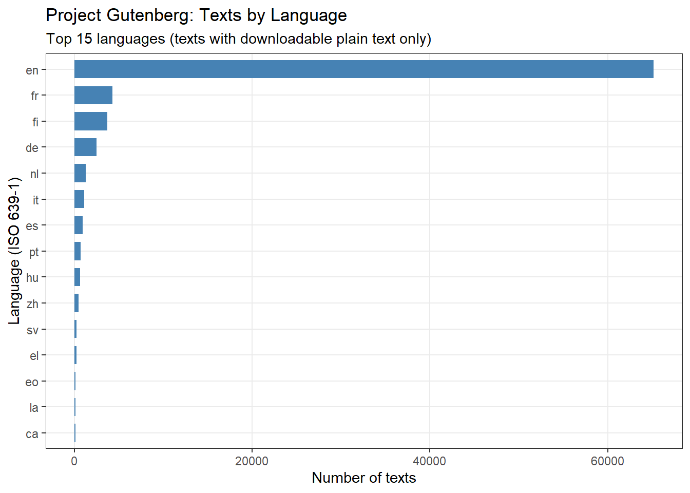

This how-to guide shows how to download, inspect, and clean texts from the Project Gutenberg archive using R. Project Gutenberg is one of the oldest and largest freely available digital libraries, containing over 70,000 ebooks whose US copyright has expired. It is an invaluable resource for researchers in literary studies, corpus linguistics, computational humanities, and any field requiring access to large amounts of digitised historical and literary text.
The R package gutenbergr provides convenient programmatic access to the Project Gutenberg catalogue, allowing you to search, filter, and download texts directly into your R session without manual downloading or file management.
Before You Start
This guide assumes basic familiarity with R. If you are new to R, please work through the following tutorials first:
A robust download function — handling mirror failures automatically
Exploring the catalogue — browsing and searching available texts
Filtering by author, language, subject, and rights
Downloading individual texts
Downloading multiple texts simultaneously
Cleaning and preparing downloaded texts — removing boilerplate, splitting into sections, and saving for analysis
Troubleshooting — encoding issues and texts not found
Citation
Martin Schweinberger. 2026. Downloading Texts from Project Gutenberg using R. The Language Technology and Data Analysis Laboratory (LADAL), The University of Queensland, Australia. url: https://ladal.edu.au/tutorials/gutenberg/gutenberg.html (Version 2026.03.27), doi: .
Setup
Section Overview
What you’ll learn: How to install and load the packages needed for this guide
Installing Packages
Code
# Install required packages — run once, then comment outinstall.packages("gutenbergr") # access to Project Gutenberg catalogue and downloadsinstall.packages("dplyr") # data manipulation (filter, select, mutate)install.packages("stringr") # string processing (cleaning text)install.packages("tidyr") # reshaping datainstall.packages("ggplot2") # visualisationinstall.packages("flextable") # formatted tablesinstall.packages("DT") # interactive data tablesinstall.packages("here") # portable file paths
Loading Packages
Code
# Load packages — run at the start of every sessionlibrary(gutenbergr) # Project Gutenberg interfacelibrary(dplyr) # data manipulationlibrary(stringr) # string processinglibrary(tidyr) # data reshapinglibrary(ggplot2) # plottinglibrary(flextable) # formatted tableslibrary(DT) # interactive HTML tableslibrary(here) # portable file paths
Why Not library(tidyverse)?
Loading individual packages (dplyr, stringr, etc.) is preferable to library(tidyverse) for reproducibility: it makes dependencies explicit, avoids namespace conflicts, and ensures your code works even if the Tidyverse bundle changes. LADAL tutorials follow this best practice throughout.
A Robust Download Function
Section Overview
What you’ll learn: Why direct gutenberg_download() calls sometimes return empty results, and how to define a single reliable helper function that all subsequent downloads use
Project Gutenberg’s servers and mirrors can be unreliable — a direct gutenberg_download() call may silently return zero lines even when the ID is correct. The most robust approach is to:
Try several mirrors in sequence via gutenbergr
Fall back to reading the raw plain-text file directly from the Project Gutenberg cache URL, which is always at https://www.gutenberg.org/cache/epub/{ID}/pg{ID}.txt
We define this logic once as a helper function and use it throughout the guide:
Code
# Helper function: download a single text by Gutenberg ID# Tries gutenbergr mirrors first; falls back to direct URL read if all fail# Arguments:# id : integer gutenberg_id# meta_fields : character vector of metadata columns to attach (passed to gutenberg_download)# title_fallback : title string to use in the fallback data framegutenberg_safe <-function(id, meta_fields ="title", title_fallback =NA_character_) {# List of mirrors to try in order mirrors <-c("http://mirrors.xmission.com/gutenberg/","http://gutenberg.pglaf.org/","https://gutenberg.readingroo.ms/","http://gutenberg.nabasny.com/" ) result <-NULL# Step 1: try each mirror via gutenbergrfor (m in mirrors) {tryCatch({ dl <-gutenberg_download(id, meta_fields = meta_fields, mirror = m)if (!is.null(dl) &&nrow(dl) >0) {message("Downloaded ID ", id, " via mirror: ", m) result <- dlbreak } }, error =function(e) NULL,warning =function(w) NULL) }# Step 2: fall back to direct cache URL if all mirrors failedif (is.null(result) ||nrow(result) ==0) {message("All mirrors failed for ID ", id, " — trying direct cache URL") cache_url <-paste0("https://www.gutenberg.org/cache/epub/", id, "/pg", id, ".txt")tryCatch({ lines <-readLines(url(cache_url), warn =FALSE, encoding ="UTF-8")# Look up title from metadata if not suppliedif (is.na(title_fallback)) { title_fallback <- gutenberg_metadata |> dplyr::filter(gutenberg_id == id) |> dplyr::pull(title) |> dplyr::first() } result <-data.frame(gutenberg_id = id,text = lines,title = title_fallback,stringsAsFactors =FALSE )message("Downloaded ID ", id, " via direct cache URL (", nrow(result), " lines)") }, error =function(e) {stop("Could not download ID ", id, ": ", conditionMessage(e)) }) } result}
Why a Helper Function?
Defining gutenberg_safe() once and calling it throughout means:
Every download in this guide uses the same robust fallback logic
If Project Gutenberg updates its mirror list, you only need to update one place
The function is self-documenting — the mirrors and fallback URL are visible in one location
You can copy gutenberg_safe() directly into your own projects
Exploring the Project Gutenberg Catalogue
Section Overview
What you’ll learn: How to browse and search the full Project Gutenberg catalogue, and what metadata fields are available for filtering
The Metadata Table
The gutenbergr package ships with a metadata table — gutenberg_metadata — that contains information about every text in the Project Gutenberg archive. You can inspect it directly without downloading anything:
Code
# Load the full metadata table# This is a local data frame included with the gutenbergr packageoverview <- gutenberg_metadata# How many texts are available?cat("Total texts in catalogue:", nrow(overview), "\n")
Copyright status (typically 'Public domain in the USA.')
has_text
Whether a plain text version is available for download
Browsing with gutenberg_works()
The gutenberg_works() function is a convenience wrapper around gutenberg_metadata that returns only texts with a downloadable plain text version (has_text == TRUE) in the public domain:
Code
# Browse all available public domain texts with plain text versionsall_works <-gutenberg_works()cat("Texts available via gutenberg_works():", nrow(all_works), "\n")
Filtering the Catalogue
Section Overview
What you’ll learn: How to filter the Project Gutenberg catalogue by author, language, subject/bookshelf, and multiple criteria to find exactly the texts you need
Filter by Author
Author names in the catalogue are stored in “Surname, Firstname” format:
Code
# Find all works by Charles Darwin using exact name formatdarwin_works <-gutenberg_works(author =="Darwin, Charles")cat("Works by Charles Darwin:", nrow(darwin_works), "\n")
Works by Charles Darwin: 31
When unsure of the exact name format, use str_detect() for partial matching:
Code
# Partial name search — more robust than exact matchingausten_works <-gutenberg_works( stringr::str_detect(author, "Austen"))cat("Works matching 'Austen':", nrow(austen_works), "\n")
# A tibble: 16 × 3
gutenberg_id title author
<int> <chr> <chr>
1 105 "Persuasion" Auste…
2 121 "Northanger Abbey" Auste…
3 141 "Mansfield Park" Auste…
4 158 "Emma" Auste…
5 946 "Lady Susan" Auste…
6 1212 "Love and Freindship [sic]" Auste…
7 1342 "Pride and Prejudice" Auste…
8 17797 "Memoir of Jane Austen" Auste…
9 21839 "Sense and Sensibility" Auste…
10 22536 "Jane Austen, Her Life and Letters: A Family Record" Auste…
11 22536 "Jane Austen, Her Life and Letters: A Family Record" Auste…
12 31100 "The Complete Project Gutenberg Works of Jane Austen\nA … Auste…
13 33513 "The Frightened Planet" Auste…
14 37431 "Pride and Prejudice, a play founded on Jane Austen's no… Auste…
15 39897 "Discoveries Among the Ruins of Nineveh and Babylon" Layar…
16 42078 "The Letters of Jane Austen\r\nSelected from the compila… Auste…
Filter by Language
The language field uses ISO 639-1 two-letter codes:
# Count texts per language across the full cataloguelang_counts <- gutenberg_metadata |> dplyr::filter(has_text ==TRUE) |> dplyr::count(language, sort =TRUE) |> dplyr::filter(!is.na(language)) |>head(15)
Code
lang_counts |> dplyr::mutate(language =reorder(language, n)) |>ggplot(aes(x = language, y = n)) +geom_col(fill ="steelblue", width =0.7) +coord_flip() +labs(title ="Project Gutenberg: Texts by Language",subtitle ="Top 15 languages (texts with downloadable plain text only)",x ="Language (ISO 639-1)",y ="Number of texts" ) +theme_bw() +theme(panel.grid.minor =element_blank())

Filter by Subject / Bookshelf
Project Gutenberg organises texts into thematic “bookshelves”:
Code
# Find all texts on the Science Fiction bookshelfscifi <-gutenberg_works( stringr::str_detect(gutenberg_bookshelf, "Science Fiction"))cat("Science Fiction texts:", nrow(scifi), "\n")
# A tibble: 10 × 3
gutenberg_id title author
<int> <chr> <chr>
1 36 The War of the Worlds Wells, H. G. (Herbe…
2 42 The Strange Case of Dr. Jekyll and Mr. Hyde Stevenson, Robert L…
3 62 A Princess of Mars Burroughs, Edgar Ri…
4 64 The Gods of Mars Burroughs, Edgar Ri…
5 68 The warlord of Mars Burroughs, Edgar Ri…
6 72 Thuvia, Maid of Mars Burroughs, Edgar Ri…
7 86 A Connecticut Yankee in King Arthur's Court Twain, Mark
8 96 The Monster Men Burroughs, Edgar Ri…
9 97 Flatland: A Romance of Many Dimensions Abbott, Edwin Abbott
10 123 At the Earth's Core Burroughs, Edgar Ri…
Code
# Browse the top 20 most populated bookshelvesgutenberg_metadata |> dplyr::filter(!is.na(gutenberg_bookshelf), has_text ==TRUE) |> tidyr::separate_rows(gutenberg_bookshelf, sep ="/") |> dplyr::mutate(gutenberg_bookshelf = stringr::str_trim(gutenberg_bookshelf)) |> dplyr::count(gutenberg_bookshelf, sort =TRUE) |>head(20)
# A tibble: 10 × 4
gutenberg_id title author gutenberg_bookshelf
<int> <chr> <chr> <chr>
1 36 The War of the Worlds Wells… Movie Books/Scienc…
2 42 The Strange Case of Dr. Jekyll and M… Steve… Precursors of Scie…
3 62 A Princess of Mars Burro… Best Books Ever Li…
4 64 The Gods of Mars Burro… Science Fiction
5 68 The warlord of Mars Burro… Science Fiction
6 72 Thuvia, Maid of Mars Burro… Science Fiction
7 86 A Connecticut Yankee in King Arthur'… Twain… Precursors of Scie…
8 96 The Monster Men Burro… Science Fiction
9 97 Flatland: A Romance of Many Dimensio… Abbot… Science Fiction/Ma…
10 123 At the Earth's Core Burro… Science Fiction
Downloading Individual Texts
Section Overview
What you’ll learn: How to download a single text by ID using gutenberg_safe(), and what the downloaded data looks like
Always Use the Gutenberg ID
Every text has a unique numeric ID visible in its Project Gutenberg URL (e.g., gutenberg.org/ebooks/1513). Downloading by ID is more reliable than searching by title, which can match multiple entries. Use gutenberg_works() or browse gutenberg.org to look up IDs before downloading.
Download Romeo and Juliet (ID: 1513)
Code
# Download Romeo and Juliet using gutenberg_safe()# gutenberg_safe() tries multiple mirrors, then falls back to the direct cache URLromeo <-gutenberg_safe(1513)cat("Downloaded:", nrow(romeo), "lines\n")
This ebook is for the use of anyone anywhere in the United States and
Romeo and Juliet
1,513
most other parts of the world at no cost and with almost no restrictions
Romeo and Juliet
1,513
whatsoever. You may copy it, give it away or re-use it under the terms
Romeo and Juliet
1,513
of the Project Gutenberg License included with this ebook or online
Romeo and Juliet
1,513
at www.gutenberg.org. If you are not located in the United States,
Romeo and Juliet
1,513
you will have to check the laws of the country where you are located
Romeo and Juliet
1,513
before using this eBook.
Romeo and Juliet
1,513
Romeo and Juliet
1,513
Title: Romeo and Juliet
Romeo and Juliet
1,513
Romeo and Juliet
1,513
Author: William Shakespeare
Romeo and Juliet
1,513
Romeo and Juliet
1,513
Release date: November 1, 1998 [eBook #1513]
Romeo and Juliet
Download with Additional Metadata
The meta_fields argument attaches metadata columns to the downloaded text — useful when combining multiple texts into a corpus:
Code
# Download On the Origin of Species with title, author, and language attachedorigin_species <-gutenberg_safe(1228, # On the Origin of Speciesmeta_fields =c("title", "author", "language"))cat("Title:", unique(origin_species$title), "\n")
Title: On the Origin of Species By Means of Natural Selection
Or, the Preservation of Favoured Races in the Struggle for Life
What you’ll learn: How to download several texts at once and organise them into a labelled corpus ready for analysis
Downloading by ID Vector
To download multiple texts, call gutenberg_safe() for each ID and combine the results with dplyr::bind_rows():
Code
# Download Wuthering Heights (768) and Jane Eyre (1260)# Call gutenberg_safe() for each ID, then stack the resultsbronte_texts <- dplyr::bind_rows(gutenberg_safe(768), # Wuthering Heights — Emily Brontëgutenberg_safe(1260) # Jane Eyre — Charlotte Brontë)# How many lines from each text?bronte_texts |> dplyr::count(title, name ="lines")
# A tibble: 2 × 2
title lines
<chr> <int>
1 Jane Eyre: An Autobiography 21381
2 Wuthering Heights 12342
title
Number of lines
Jane Eyre: An Autobiography
21,381
Wuthering Heights
12,342
Downloading All Works by an Author
Retrieve all IDs for an author from the catalogue, then loop through them:
Code
# Find all Charles Dickens IDsdickens_ids <-gutenberg_works( author =="Dickens, Charles", language =="en") |> dplyr::pull(gutenberg_id)cat("Dickens texts available:", length(dickens_ids), "\n")
# Download all Dickens texts — this may take several minutes# purrr::map_dfr() loops over each ID and stacks the resultsdickens_corpus <- purrr::map_dfr( dickens_ids,~gutenberg_safe(.x, meta_fields =c("title", "author")))cat("Total lines:", nrow(dickens_corpus), "\n")cat("Texts downloaded:", length(unique(dickens_corpus$title)), "\n")
Large Downloads
Downloading many texts at once can take several minutes. Best practices:
Save immediately after downloading (see the Saving section below) to avoid re-downloading
Download in batches if fetching more than ~20 texts
Be respectful of Project Gutenberg’s resources — it is a non-profit volunteer project
Building a Multi-Author Corpus
Code
# Download three 19th-century texts for comparative analysis:# Moby Dick (2701), Pride and Prejudice (1342), On the Origin of Species (1228)comparison_corpus <- dplyr::bind_rows(gutenberg_safe(2701, meta_fields =c("title", "author")), # Moby Dickgutenberg_safe(1342, meta_fields =c("title", "author")), # Pride and Prejudicegutenberg_safe(1228, meta_fields =c("title", "author")) # On the Origin of Species) |># If the author column is missing (fallback download), add it from metadata (\(df) {if (!"author"%in%names(df)) { df <- df |> dplyr::left_join( gutenberg_metadata |> dplyr::select(gutenberg_id, author),by ="gutenberg_id" ) } df })()# Corpus summarycomparison_corpus |> dplyr::group_by(author, title) |> dplyr::summarise(lines = dplyr::n(),words =sum(stringr::str_count(text, "\\S+"), na.rm =TRUE),.groups ="drop" )
# A tibble: 3 × 4
author title lines words
<chr> <chr> <int> <int>
1 Austen, Jane "Pride and Prejudice" 14911 130410
2 Darwin, Charles "On the Origin of Species By Means of Natural S… 16570 158589
3 Melville, Herman "Moby Dick; Or, The Whale" 22310 215840
author
title
Lines
Words
Austen, Jane
Pride and Prejudice
14,911
130,410
Darwin, Charles
On the Origin of Species By Means of Natural Selection
Or, the Preservation of Favoured Races in the Struggle for Life
16,570
158,589
Melville, Herman
Moby Dick; Or, The Whale
22,310
215,840
Cleaning and Preparing Downloaded Texts
Section Overview
What you’ll learn: How to remove Project Gutenberg boilerplate, collapse lines into continuous text, split into chapters or acts, and save cleaned texts for analysis
Why this matters: Raw downloads include licence notices and formatting artefacts that distort frequency analysis, topic models, and other quantitative methods if not removed.
What Raw Downloads Look Like
Each download is a line-by-line data frame. The first and last portions contain boilerplate licence text:
[1] "The Project Gutenberg eBook of Romeo and Juliet"
[2] " "
[3] "This ebook is for the use of anyone anywhere in the United States and"
[4] "most other parts of the world at no cost and with almost no restrictions"
[5] "whatsoever. You may copy it, give it away or re-use it under the terms"
[6] "of the Project Gutenberg License included with this ebook or online"
[7] "at www.gutenberg.org. If you are not located in the United States,"
[8] "you will have to check the laws of the country where you are located"
[9] "before using this eBook."
[10] ""
[11] "Title: Romeo and Juliet"
[12] ""
[13] "Author: William Shakespeare"
[14] ""
[15] "Release date: November 1, 1998 [eBook #1513]"
[16] " Most recently updated: September 18, 2025"
[17] ""
[18] "Language: English"
[19] ""
[20] "Credits: the PG Shakespeare Team, a team of about twenty Project Gutenberg volunteers"
[21] ""
[22] ""
[23] "*** START OF THE PROJECT GUTENBERG EBOOK ROMEO AND JULIET ***"
[24] ""
[25] ""
[26] ""
[27] ""
[28] "THE TRAGEDY OF ROMEO AND JULIET"
[29] ""
[30] "by William Shakespeare"
[1] "Gutenberg™ concept of a library of electronic works that could be"
[2] "freely shared with anyone. For forty years, he produced and"
[3] "distributed Project Gutenberg™ eBooks with only a loose network of"
[4] "volunteer support."
[5] ""
[6] "Project Gutenberg™ eBooks are often created from several printed"
[7] "editions, all of which are confirmed as not protected by copyright in"
[8] "the U.S. unless a copyright notice is included. Thus, we do not"
[9] "necessarily keep eBooks in compliance with any particular paper"
[10] "edition."
[11] ""
[12] "Most people start at our website which has the main PG search"
[13] "facility: www.gutenberg.org."
[14] ""
[15] "This website includes information about Project Gutenberg™,"
[16] "including how to make donations to the Project Gutenberg Literary"
[17] "Archive Foundation, how to help produce our new eBooks, and how to"
[18] "subscribe to our email newsletter to hear about new eBooks."
[19] ""
[20] ""
Removing Boilerplate
Every Project Gutenberg text uses *** START OF and *** END OF as consistent boundary markers:
Code
# Find the start and end marker line positionsstart_marker <-which(stringr::str_detect(romeo$text, "\\*\\*\\* START OF"))end_marker <-which(stringr::str_detect(romeo$text, "\\*\\*\\* END OF"))cat("START marker at line:", start_marker, "\n")
START marker at line: 23
Code
cat("END marker at line:", end_marker, "\n")
END marker at line: 5297
Code
# Keep only lines between the two markersromeo_clean <- romeo |> dplyr::slice((start_marker +1):(end_marker -1)) |> dplyr::filter(!is.na(text))cat("Lines after boilerplate removal:", nrow(romeo_clean),"(removed", nrow(romeo) -nrow(romeo_clean), ")\n")
Lines after boilerplate removal: 5273 (removed 374 )
Removing Empty Lines
Code
# Remove lines that are empty or contain only whitespaceromeo_clean <- romeo_clean |> dplyr::filter(stringr::str_trim(text) !="")cat("Lines after removing empty lines:", nrow(romeo_clean), "\n")
Lines after removing empty lines: 4137
Collapsing to a Single String
Code
# Join all lines into one continuous string, then normalise whitespaceromeo_text <- romeo_clean$text |>paste(collapse =" ") |> stringr::str_squish()cat("Total characters:", nchar(romeo_text), "\n")
First 300 characters:
THE TRAGEDY OF ROMEO AND JULIET by William Shakespeare Contents THE PROLOGUE. ACT I Scene I. A public place. Scene II. A Street. Scene III. Room in Capulet’s House. Scene IV. A Street. Scene V. A Hall in Capulet’s House. ACT II CHORUS. Scene I. An open place adjoining Capulet’s Garden. Scene II. Cap
Splitting into Acts and Scenes
Code
# Split Romeo and Juliet into Acts using a regex on Roman numeral headingsacts <- romeo_text |> stringr::str_replace_all("(ACT [IVX]+\\.?)", "|||\\1") |># insert split marker stringr::str_split("\\|\\|\\|") |>unlist() |> (\(x) x[nchar(stringr::str_trim(x)) >20])() # drop very short fragmentscat("Segments found:", length(acts), "\n")
Segment 2 begins: ACT I Scene I. A public place. Scene II. A Street. Scene III. Room in Capulet’s House. Scene IV. A Street. Scene V. A Ha
Splitting into Chapters
Code
# Clean Wuthering Heights from the bronte_texts corpuswuthering <- bronte_texts |> dplyr::filter(stringr::str_detect(title, "Wuthering"))# Diagnostic: check what the opening lines look like# (useful for seeing the exact marker format used)cat("First 5 lines:\n")
First 5 lines:
Code
cat(head(wuthering$text, 5), sep ="\n")
Wuthering Heights
by Emily Brontë
Code
# Find boilerplate markers — try several common variantswh_start <-which(stringr::str_detect( wuthering$text, stringr::regex("\\*{3}\\s*START OF", ignore_case =TRUE)))wh_end <-which(stringr::str_detect( wuthering$text, stringr::regex("\\*{3}\\s*END OF", ignore_case =TRUE)))# If markers not found, use the full text with no trimmingif (length(wh_start) ==0) {cat("START marker not found — using full text\n") wh_start <-0L}
START marker not found — using full text
Code
if (length(wh_end) ==0) {cat("END marker not found — using full text\n") wh_end <-nrow(wuthering) +1L}
END marker not found — using full text
Code
# Slice between markers (or use full text if markers absent)wh_text <- wuthering |> dplyr::slice((wh_start[1] +1):(wh_end[1] -1)) |> dplyr::filter(stringr::str_trim(text) !="") |> dplyr::pull(text) |>paste(collapse =" ") |> stringr::str_squish()cat("Characters in cleaned text:", nchar(wh_text), "\n")
Chapter 1 begins: CHAPTER II Yesterday afternoon set in misty and cold. I had half a mind to spend it by my study fire, instead of wading through heath and mud to Wuthe
Saving Cleaned Texts
Save downloaded and cleaned data immediately to avoid re-downloading in future sessions:
Code
# Create data directory if neededif (!dir.exists(here::here("data"))) {dir.create(here::here("data"), recursive =TRUE)}# Save as RDS (R's native binary format — fast and lossless)saveRDS(romeo_text, here::here("data", "romeo_clean.rds"))saveRDS(wh_chapters, here::here("data", "wh_chapters.rds"))saveRDS(comparison_corpus, here::here("data", "comparison_corpus.rds"))# Save as plain text for use outside RwriteLines(romeo_text, here::here("data", "romeo_clean.txt"))cat("Saved to:", here::here("data"), "\n")
Code
# Load saved data in future sessions — no re-downloading neededromeo_text <-readRDS(here::here("data", "romeo_clean.rds"))wh_chapters <-readRDS(here::here("data", "wh_chapters.rds"))comparison_corpus <-readRDS(here::here("data", "comparison_corpus.rds"))
Troubleshooting
Section Overview
What you’ll learn: How to handle encoding issues and texts that are not found in the catalogue
Encoding Issues
Some older texts use Latin-1 encoding rather than UTF-8, producing garbled characters for accented letters:
Code
# Fix garbled characters by re-encoding from Latin-1 to UTF-8text_fixed <- text |> dplyr::mutate(text =iconv(text, from ="latin1", to ="UTF-8", sub ="byte") )# For individual stringsclean_line <-enc2utf8(text$text[1])
Text Not Found
If gutenberg_works() returns zero rows or gutenberg_safe() fails:
Code
# Problem 1: exact title match fails# Solution: partial, case-insensitive searchgutenberg_works( stringr::str_detect(stringr::str_to_lower(title), "romeo"))# Problem 2: text has no downloadable plain text version# Solution: check has_text == TRUEgutenberg_metadata |> dplyr::filter(title =="Romeo and Juliet", has_text ==TRUE)# Problem 3: check rights statusgutenberg_metadata |> dplyr::filter(title =="Romeo and Juliet") |> dplyr::select(gutenberg_id, title, rights, has_text)
Verifying a Download
Code
# Reusable function to quickly check a downloaded text data frameverify_download <-function(text_df, min_lines =100) {cat("--- Download Verification ---\n")cat("Rows:", nrow(text_df), "\n")cat("Columns:", paste(names(text_df), collapse =", "), "\n")cat("Empty lines:", sum(is.na(text_df$text) | text_df$text ==""), "\n")if ("title"%in%names(text_df)) cat("Title:", unique(text_df$title), "\n")if ("author"%in%names(text_df)) cat("Author:", unique(text_df$author), "\n")if (nrow(text_df) < min_lines) warning("Download seems very short — check for errors")cat("First non-empty line:", text_df$text[which(nzchar(text_df$text))[1]], "\n")}verify_download(romeo, min_lines =500)
--- Download Verification ---
Rows: 5647
Columns: gutenberg_id, text, title
Empty lines: 1194
Title: Romeo and Juliet
First non-empty line: The Project Gutenberg eBook of Romeo and Juliet
AI Statement
This how-to guide was substantially revised and expanded from the original LADAL draft (gutenberg.qmd) with the assistance of Claude (Anthropic), an AI language model. The AI was used to: restructure the guide into a logical sequence of sections; add the gutenberg_safe() helper function (applying the mirror-loop + direct-URL fallback pattern consistently across all download calls, replacing the original gutenberg_download() pipe approach that returned empty results); expand filtering coverage to include bookshelf filtering, multi-criteria filtering, and partial name matching; add the cleaning and preparation section (boilerplate removal, splitting into acts/chapters, saving/loading); add the troubleshooting section; add the language frequency bar plot and metadata fields table; convert all formatting to Quarto callouts and LADAL flextable style; and update the YAML and citation. All content and workflow decisions were reviewed by the tutorial author.
Citation & Session Info
Citation
Martin Schweinberger. 2026. Downloading Texts from Project Gutenberg using R. The Language Technology and Data Analysis Laboratory (LADAL), The University of Queensland, Australia. url: https://ladal.edu.au/tutorials/gutenberg/gutenberg.html (Version 2026.03.27), doi: .
@manual{martinschweinberger2026downloading,
author = {Martin Schweinberger},
title = {Downloading Texts from Project Gutenberg using R},
year = {2026},
note = {https://ladal.edu.au/tutorials/gutenberg/gutenberg.html},
organization = {The Language Technology and Data Analysis Laboratory (LADAL), The University of Queensland, Australia},
edition = {2026.03.27}
doi = {}
}
This tutorial was re-developed with the assistance of Claude (claude.ai), a large language model created by Anthropic. Claude was used to help revise the tutorial text, structure the instructional content, generate the R code examples, and write the checkdown quiz questions and feedback strings. All content was reviewed, edited, and approved by the author (Martin Schweinberger), who takes full responsibility for the accuracy and pedagogical appropriateness of the material. The use of AI assistance is disclosed here in the interest of transparency and in accordance with emerging best practices for AI-assisted academic content creation.
---title: "Downloading Texts from Project Gutenberg using R"author: "Martin Schweinberger"date: "2026"params: title: "Downloading Texts from Project Gutenberg using R" author: "Martin Schweinberger" year: "2026" version: "2026.03.27" url: "https://ladal.edu.au/tutorials/gutenberg/gutenberg.html" institution: "The Language Technology and Data Analysis Laboratory (LADAL), The University of Queensland, Australia" description: "This how-to tutorial demonstrates how to download and process public domain texts from Project Gutenberg programmatically in R using the gutenbergr package, covering text search, batch downloading, and the cleaning of Gutenberg-specific formatting for use in corpus analysis. It is aimed at researchers in digital humanities and corpus linguistics who want to build literary corpora from freely available historical texts." doi: "10.5281/zenodo.19332882"format: html: toc: true toc-depth: 4 code-fold: show code-tools: true theme: cosmo---```{r setup, echo=FALSE, message=FALSE, warning=FALSE}options(stringsAsFactors = FALSE)options("scipen" = 100, "digits" = 4)```{width="100%" height="200px" loading="lazy"}# Introduction {#intro}{ width=15% style="float:right; padding:10px" }This how-to guide shows how to download, inspect, and clean texts from the [Project Gutenberg](https://www.gutenberg.org/) archive using R. Project Gutenberg is one of the oldest and largest freely available digital libraries, containing over 70,000 ebooks whose US copyright has expired. It is an invaluable resource for researchers in literary studies, corpus linguistics, computational humanities, and any field requiring access to large amounts of digitised historical and literary text.The R package `gutenbergr` provides convenient programmatic access to the Project Gutenberg catalogue, allowing you to search, filter, and download texts directly into your R session without manual downloading or file management.::: {.callout-note}## Before You StartThis guide assumes basic familiarity with R. If you are new to R, please work through the following tutorials first:- [Getting Started with R and RStudio](/tutorials/intror/intror.html)- [Loading, Saving, and Generating Data in R](/tutorials/load/load.html)- [String Processing in R](/tutorials/string/string.html):::::: {.callout-tip}## What This Guide Covers1. **Setup** — installing and loading required packages2. **A robust download function** — handling mirror failures automatically3. **Exploring the catalogue** — browsing and searching available texts4. **Filtering by author, language, subject, and rights**5. **Downloading individual texts**6. **Downloading multiple texts simultaneously**7. **Cleaning and preparing downloaded texts** — removing boilerplate, splitting into sections, and saving for analysis8. **Troubleshooting** — encoding issues and texts not found:::::: {.callout-note}## Citation```{r citation-callout-top, echo=FALSE, results='asis'}cat( params$author, ". ", params$year, ". *", params$title, "*. ", params$institution, ". ", "url: ", params$url, " ", "(Version ", params$version, "), ", "doi: ", params$doi, ".", sep = "")```:::# Setup {#setup}::: {.callout-note}## Section Overview**What you'll learn:** How to install and load the packages needed for this guide:::## Installing Packages {-}```{r prep1, eval=FALSE, message=FALSE, warning=FALSE}# Install required packages — run once, then comment outinstall.packages("gutenbergr") # access to Project Gutenberg catalogue and downloadsinstall.packages("dplyr") # data manipulation (filter, select, mutate)install.packages("stringr") # string processing (cleaning text)install.packages("tidyr") # reshaping datainstall.packages("ggplot2") # visualisationinstall.packages("flextable") # formatted tablesinstall.packages("DT") # interactive data tablesinstall.packages("here") # portable file paths```## Loading Packages {-}```{r load_pkgs, message=FALSE, warning=FALSE}# Load packages — run at the start of every sessionlibrary(gutenbergr) # Project Gutenberg interfacelibrary(dplyr) # data manipulationlibrary(stringr) # string processinglibrary(tidyr) # data reshapinglibrary(ggplot2) # plottinglibrary(flextable) # formatted tableslibrary(DT) # interactive HTML tableslibrary(here) # portable file paths```::: {.callout-tip}## Why Not `library(tidyverse)`?Loading individual packages (`dplyr`, `stringr`, etc.) is preferable to `library(tidyverse)` for reproducibility: it makes dependencies explicit, avoids namespace conflicts, and ensures your code works even if the Tidyverse bundle changes. LADAL tutorials follow this best practice throughout.:::---# A Robust Download Function {#download_fn}::: {.callout-note}## Section Overview**What you'll learn:** Why direct `gutenberg_download()` calls sometimes return empty results, and how to define a single reliable helper function that all subsequent downloads use:::Project Gutenberg's servers and mirrors can be unreliable — a direct `gutenberg_download()` call may silently return zero lines even when the ID is correct. The most robust approach is to:1. Try several mirrors in sequence via `gutenbergr`2. Fall back to reading the raw plain-text file directly from the Project Gutenberg cache URL, which is always at `https://www.gutenberg.org/cache/epub/{ID}/pg{ID}.txt`We define this logic once as a helper function and use it throughout the guide:```{r download_fn, message=FALSE, warning=FALSE}# Helper function: download a single text by Gutenberg ID# Tries gutenbergr mirrors first; falls back to direct URL read if all fail# Arguments:# id : integer gutenberg_id# meta_fields : character vector of metadata columns to attach (passed to gutenberg_download)# title_fallback : title string to use in the fallback data framegutenberg_safe <- function(id, meta_fields = "title", title_fallback = NA_character_) { # List of mirrors to try in order mirrors <- c( "http://mirrors.xmission.com/gutenberg/", "http://gutenberg.pglaf.org/", "https://gutenberg.readingroo.ms/", "http://gutenberg.nabasny.com/" ) result <- NULL # Step 1: try each mirror via gutenbergr for (m in mirrors) { tryCatch({ dl <- gutenberg_download(id, meta_fields = meta_fields, mirror = m) if (!is.null(dl) && nrow(dl) > 0) { message("Downloaded ID ", id, " via mirror: ", m) result <- dl break } }, error = function(e) NULL, warning = function(w) NULL) } # Step 2: fall back to direct cache URL if all mirrors failed if (is.null(result) || nrow(result) == 0) { message("All mirrors failed for ID ", id, " — trying direct cache URL") cache_url <- paste0("https://www.gutenberg.org/cache/epub/", id, "/pg", id, ".txt") tryCatch({ lines <- readLines(url(cache_url), warn = FALSE, encoding = "UTF-8") # Look up title from metadata if not supplied if (is.na(title_fallback)) { title_fallback <- gutenberg_metadata |> dplyr::filter(gutenberg_id == id) |> dplyr::pull(title) |> dplyr::first() } result <- data.frame( gutenberg_id = id, text = lines, title = title_fallback, stringsAsFactors = FALSE ) message("Downloaded ID ", id, " via direct cache URL (", nrow(result), " lines)") }, error = function(e) { stop("Could not download ID ", id, ": ", conditionMessage(e)) }) } result}```::: {.callout-tip}## Why a Helper Function?Defining `gutenberg_safe()` once and calling it throughout means:- Every download in this guide uses the same robust fallback logic- If Project Gutenberg updates its mirror list, you only need to update one place- The function is self-documenting — the mirrors and fallback URL are visible in one location- You can copy `gutenberg_safe()` directly into your own projects:::---# Exploring the Project Gutenberg Catalogue {#catalogue}::: {.callout-note}## Section Overview**What you'll learn:** How to browse and search the full Project Gutenberg catalogue, and what metadata fields are available for filtering:::## The Metadata Table {-}The `gutenbergr` package ships with a metadata table — `gutenberg_metadata` — that contains information about every text in the Project Gutenberg archive. You can inspect it directly without downloading anything:```{r gb_meta, message=FALSE, warning=FALSE}# Load the full metadata table# This is a local data frame included with the gutenbergr packageoverview <- gutenberg_metadata# How many texts are available?cat("Total texts in catalogue:", nrow(overview), "\n")cat("Metadata columns:", ncol(overview), "\n")cat("Column names:", paste(names(overview), collapse = ", "), "\n")``````{r gb_meta_show, echo=FALSE, message=FALSE, warning=FALSE}# Interactive table of the first 20 rowsDT::datatable( head(overview, 20), rownames = FALSE, filter = "none", caption = "First 20 entries in the Project Gutenberg catalogue.", options = list(pageLength = 5, scrollX = TRUE))```The metadata table contains the following key fields:```{r meta_fields, echo=FALSE, message=FALSE, warning=FALSE}data.frame( Field = c("gutenberg_id", "title", "author", "gutenberg_author_id", "language", "gutenberg_bookshelf", "rights", "has_text"), Description = c("Unique numeric identifier for each text", "Title of the work", "Author name in 'Surname, Firstname' format", "Unique identifier for the author (useful for finding all works by one author)", "ISO 639 language code (e.g. 'en', 'de', 'fr')", "Thematic bookshelf category (e.g. 'Science Fiction', 'History')", "Copyright status (typically 'Public domain in the USA.')", "Whether a plain text version is available for download")) |> flextable() |> flextable::set_table_properties(width = .99, layout = "autofit") |> flextable::theme_zebra() |> flextable::fontsize(size = 11) |> flextable::fontsize(size = 11, part = "header") |> flextable::align_text_col(align = "left") |> flextable::set_caption(caption = "Key metadata fields in gutenberg_metadata.") |> flextable::border_outer()```## Browsing with `gutenberg_works()` {-}The `gutenberg_works()` function is a convenience wrapper around `gutenberg_metadata` that returns only texts with a downloadable plain text version (`has_text == TRUE`) in the public domain:```{r gb_works, eval=FALSE, message=FALSE, warning=FALSE}# Browse all available public domain texts with plain text versionsall_works <- gutenberg_works()cat("Texts available via gutenberg_works():", nrow(all_works), "\n")```---# Filtering the Catalogue {#filtering}::: {.callout-note}## Section Overview**What you'll learn:** How to filter the Project Gutenberg catalogue by author, language, subject/bookshelf, and multiple criteria to find exactly the texts you need:::## Filter by Author {-}Author names in the catalogue are stored in **"Surname, Firstname"** format:```{r gb_author, message=FALSE, warning=FALSE}# Find all works by Charles Darwin using exact name formatdarwin_works <- gutenberg_works(author == "Darwin, Charles")cat("Works by Charles Darwin:", nrow(darwin_works), "\n")``````{r gb_author_show, echo=FALSE, message=FALSE, warning=FALSE}DT::datatable( darwin_works |> dplyr::select(gutenberg_id, title, author, language), rownames = FALSE, filter = "none", caption = "All works by Charles Darwin available through Project Gutenberg.", options = list(pageLength = 5, scrollX = TRUE))```When unsure of the exact name format, use `str_detect()` for partial matching:```{r gb_author_partial, message=FALSE, warning=FALSE}# Partial name search — more robust than exact matchingausten_works <- gutenberg_works( stringr::str_detect(author, "Austen"))cat("Works matching 'Austen':", nrow(austen_works), "\n")austen_works |> dplyr::select(gutenberg_id, title, author)```## Filter by Language {-}The `language` field uses ISO 639-1 two-letter codes:```{r gb_lang, message=FALSE, warning=FALSE}# Count German-language texts availablegutenberg_works( languages = "de", all_languages = TRUE) |> dplyr::count(language, sort = TRUE)```::: {.callout-tip}## Common Language Codes| Code | Language | Code | Language ||------|------------|------|------------|| `en` | English | `de` | German || `fr` | French | `it` | Italian || `es` | Spanish | `nl` | Dutch || `pt` | Portuguese | `la` | Latin || `fi` | Finnish | `zh` | Chinese |For a full list, see the [ISO 639-1 standard](https://en.wikipedia.org/wiki/List_of_ISO_639-1_codes).:::```{r gb_lang_count, message=FALSE, warning=FALSE}# Count texts per language across the full cataloguelang_counts <- gutenberg_metadata |> dplyr::filter(has_text == TRUE) |> dplyr::count(language, sort = TRUE) |> dplyr::filter(!is.na(language)) |> head(15)``````{r gb_lang_plot, message=FALSE, warning=FALSE, fig.width=7, fig.height=5}lang_counts |> dplyr::mutate(language = reorder(language, n)) |> ggplot(aes(x = language, y = n)) + geom_col(fill = "steelblue", width = 0.7) + coord_flip() + labs( title = "Project Gutenberg: Texts by Language", subtitle = "Top 15 languages (texts with downloadable plain text only)", x = "Language (ISO 639-1)", y = "Number of texts" ) + theme_bw() + theme(panel.grid.minor = element_blank())```## Filter by Subject / Bookshelf {-}Project Gutenberg organises texts into thematic "bookshelves":```{r gb_shelf, message=FALSE, warning=FALSE}# Find all texts on the Science Fiction bookshelfscifi <- gutenberg_works( stringr::str_detect(gutenberg_bookshelf, "Science Fiction"))cat("Science Fiction texts:", nrow(scifi), "\n")scifi |> dplyr::select(gutenberg_id, title, author) |> head(10)``````{r gb_shelf_browse, message=FALSE, warning=FALSE}# Browse the top 20 most populated bookshelvesgutenberg_metadata |> dplyr::filter(!is.na(gutenberg_bookshelf), has_text == TRUE) |> tidyr::separate_rows(gutenberg_bookshelf, sep = "/") |> dplyr::mutate(gutenberg_bookshelf = stringr::str_trim(gutenberg_bookshelf)) |> dplyr::count(gutenberg_bookshelf, sort = TRUE) |> head(20)```## Filter by Multiple Criteria {-}Combine conditions to narrow the catalogue precisely:```{r gb_multi_filter, message=FALSE, warning=FALSE}# English-language science textsenglish_science <- gutenberg_works( language == "en", stringr::str_detect(gutenberg_bookshelf, "(?i)science|natural|biology|astronomy"))cat("English science texts:", nrow(english_science), "\n")english_science |> dplyr::select(gutenberg_id, title, author, gutenberg_bookshelf) |> head(10)```---# Downloading Individual Texts {#single}::: {.callout-note}## Section Overview**What you'll learn:** How to download a single text by ID using `gutenberg_safe()`, and what the downloaded data looks like:::::: {.callout-tip}## Always Use the Gutenberg IDEvery text has a unique numeric ID visible in its Project Gutenberg URL (e.g., `gutenberg.org/ebooks/1513`). Downloading by ID is more reliable than searching by title, which can match multiple entries. Use `gutenberg_works()` or browse [gutenberg.org](https://www.gutenberg.org) to look up IDs before downloading.:::## Download Romeo and Juliet (ID: 1513) {-}```{r gb_romeo, message=FALSE, warning=FALSE}# Download Romeo and Juliet using gutenberg_safe()# gutenberg_safe() tries multiple mirrors, then falls back to the direct cache URLromeo <- gutenberg_safe(1513)cat("Downloaded:", nrow(romeo), "lines\n")cat("Columns:", paste(names(romeo), collapse = ", "), "\n")``````{r gb_romeo_show, echo=FALSE, message=FALSE, warning=FALSE}romeo |> head(15) |> flextable() |> flextable::set_table_properties(width = .95, layout = "autofit") |> flextable::theme_zebra() |> flextable::fontsize(size = 11) |> flextable::fontsize(size = 11, part = "header") |> flextable::align_text_col(align = "center") |> flextable::set_caption(caption = "First 15 lines of Romeo and Juliet as downloaded from Project Gutenberg.") |> flextable::border_outer()```## Download with Additional Metadata {-}The `meta_fields` argument attaches metadata columns to the downloaded text — useful when combining multiple texts into a corpus:```{r gb_meta_dl, message=FALSE, warning=FALSE}# Download On the Origin of Species with title, author, and language attachedorigin_species <- gutenberg_safe( 1228, # On the Origin of Species meta_fields = c("title", "author", "language"))cat("Title:", unique(origin_species$title), "\n")cat("Author:", unique(origin_species$author), "\n")cat("Language:", unique(origin_species$language), "\n")cat("Lines:", nrow(origin_species), "\n")```---# Downloading Multiple Texts {#multiple}::: {.callout-note}## Section Overview**What you'll learn:** How to download several texts at once and organise them into a labelled corpus ready for analysis:::## Downloading by ID Vector {-}To download multiple texts, call `gutenberg_safe()` for each ID and combine the results with `dplyr::bind_rows()`:```{r gb_multi_dl, message=FALSE, warning=FALSE}# Download Wuthering Heights (768) and Jane Eyre (1260)# Call gutenberg_safe() for each ID, then stack the resultsbronte_texts <- dplyr::bind_rows( gutenberg_safe(768), # Wuthering Heights — Emily Brontë gutenberg_safe(1260) # Jane Eyre — Charlotte Brontë)# How many lines from each text?bronte_texts |> dplyr::count(title, name = "lines")``````{r gb_multi_show, echo=FALSE, message=FALSE, warning=FALSE}bronte_texts |> dplyr::count(title, name = "Number of lines") |> flextable() |> flextable::set_table_properties(width = .55, layout = "autofit") |> flextable::theme_zebra() |> flextable::fontsize(size = 12) |> flextable::set_caption(caption = "Line counts for the two downloaded Brontë texts.") |> flextable::border_outer()```## Downloading All Works by an Author {-}Retrieve all IDs for an author from the catalogue, then loop through them:```{r gb_all_author, message=FALSE, warning=FALSE}# Find all Charles Dickens IDsdickens_ids <- gutenberg_works( author == "Dickens, Charles", language == "en") |> dplyr::pull(gutenberg_id)cat("Dickens texts available:", length(dickens_ids), "\n")cat("First 10 IDs:", paste(head(dickens_ids, 10), collapse = ", "), "\n")``````{r gb_all_author_dl, eval=FALSE, message=FALSE, warning=FALSE}# Download all Dickens texts — this may take several minutes# purrr::map_dfr() loops over each ID and stacks the resultsdickens_corpus <- purrr::map_dfr( dickens_ids, ~ gutenberg_safe(.x, meta_fields = c("title", "author")))cat("Total lines:", nrow(dickens_corpus), "\n")cat("Texts downloaded:", length(unique(dickens_corpus$title)), "\n")```::: {.callout-warning}## Large DownloadsDownloading many texts at once can take several minutes. Best practices:- **Save immediately** after downloading (see the Saving section below) to avoid re-downloading- **Download in batches** if fetching more than ~20 texts- **Be respectful** of Project Gutenberg's resources — it is a non-profit volunteer project:::## Building a Multi-Author Corpus {-}```{r gb_corpus_build, message=FALSE, warning=FALSE}# Download three 19th-century texts for comparative analysis:# Moby Dick (2701), Pride and Prejudice (1342), On the Origin of Species (1228)comparison_corpus <- dplyr::bind_rows( gutenberg_safe(2701, meta_fields = c("title", "author")), # Moby Dick gutenberg_safe(1342, meta_fields = c("title", "author")), # Pride and Prejudice gutenberg_safe(1228, meta_fields = c("title", "author")) # On the Origin of Species) |> # If the author column is missing (fallback download), add it from metadata (\(df) { if (!"author" %in% names(df)) { df <- df |> dplyr::left_join( gutenberg_metadata |> dplyr::select(gutenberg_id, author), by = "gutenberg_id" ) } df })()# Corpus summarycomparison_corpus |> dplyr::group_by(author, title) |> dplyr::summarise( lines = dplyr::n(), words = sum(stringr::str_count(text, "\\S+"), na.rm = TRUE), .groups = "drop" )``````{r gb_corpus_show, echo=FALSE, message=FALSE, warning=FALSE}comparison_corpus |> dplyr::group_by(author, title) |> dplyr::summarise( Lines = dplyr::n(), Words = sum(stringr::str_count(text, "\\S+"), na.rm = TRUE), .groups = "drop" ) |> flextable() |> flextable::set_table_properties(width = .85, layout = "autofit") |> flextable::theme_zebra() |> flextable::fontsize(size = 12) |> flextable::set_caption(caption = "Corpus summary: lines and approximate word counts per text.") |> flextable::border_outer()```---# Cleaning and Preparing Downloaded Texts {#cleaning}::: {.callout-note}## Section Overview**What you'll learn:** How to remove Project Gutenberg boilerplate, collapse lines into continuous text, split into chapters or acts, and save cleaned texts for analysis**Why this matters:** Raw downloads include licence notices and formatting artefacts that distort frequency analysis, topic models, and other quantitative methods if not removed.:::## What Raw Downloads Look Like {-}Each download is a line-by-line data frame. The first and last portions contain boilerplate licence text:```{r gb_raw_inspect, message=FALSE, warning=FALSE}# Inspect the opening lines — boilerplate header visible herehead(romeo$text, 30)``````{r gb_raw_tail, message=FALSE, warning=FALSE}# Inspect the closing lines — boilerplate footer visible heretail(romeo$text, 20)```## Removing Boilerplate {-}Every Project Gutenberg text uses `*** START OF` and `*** END OF` as consistent boundary markers:```{r gb_clean_boilerplate, message=FALSE, warning=FALSE}# Find the start and end marker line positionsstart_marker <- which(stringr::str_detect(romeo$text, "\\*\\*\\* START OF"))end_marker <- which(stringr::str_detect(romeo$text, "\\*\\*\\* END OF"))cat("START marker at line:", start_marker, "\n")cat("END marker at line:", end_marker, "\n")# Keep only lines between the two markersromeo_clean <- romeo |> dplyr::slice((start_marker + 1):(end_marker - 1)) |> dplyr::filter(!is.na(text))cat("Lines after boilerplate removal:", nrow(romeo_clean), "(removed", nrow(romeo) - nrow(romeo_clean), ")\n")```## Removing Empty Lines {-}```{r gb_clean_empty, message=FALSE, warning=FALSE}# Remove lines that are empty or contain only whitespaceromeo_clean <- romeo_clean |> dplyr::filter(stringr::str_trim(text) != "")cat("Lines after removing empty lines:", nrow(romeo_clean), "\n")```## Collapsing to a Single String {-}```{r gb_collapse, message=FALSE, warning=FALSE}# Join all lines into one continuous string, then normalise whitespaceromeo_text <- romeo_clean$text |> paste(collapse = " ") |> stringr::str_squish()cat("Total characters:", nchar(romeo_text), "\n")cat("First 300 characters:\n", substr(romeo_text, 1, 300), "\n")```## Splitting into Acts and Scenes {-}```{r gb_split_acts, message=FALSE, warning=FALSE}# Split Romeo and Juliet into Acts using a regex on Roman numeral headingsacts <- romeo_text |> stringr::str_replace_all("(ACT [IVX]+\\.?)", "|||\\1") |> # insert split marker stringr::str_split("\\|\\|\\|") |> unlist() |> (\(x) x[nchar(stringr::str_trim(x)) > 20])() # drop very short fragmentscat("Segments found:", length(acts), "\n")cat("Segment 2 begins:", substr(acts[2], 1, 120), "\n")```## Splitting into Chapters {-}```{r gb_split_chapters, message=FALSE, warning=FALSE}# Clean Wuthering Heights from the bronte_texts corpuswuthering <- bronte_texts |> dplyr::filter(stringr::str_detect(title, "Wuthering"))# Diagnostic: check what the opening lines look like# (useful for seeing the exact marker format used)cat("First 5 lines:\n")cat(head(wuthering$text, 5), sep = "\n")# Find boilerplate markers — try several common variantswh_start <- which(stringr::str_detect( wuthering$text, stringr::regex("\\*{3}\\s*START OF", ignore_case = TRUE)))wh_end <- which(stringr::str_detect( wuthering$text, stringr::regex("\\*{3}\\s*END OF", ignore_case = TRUE)))# If markers not found, use the full text with no trimmingif (length(wh_start) == 0) { cat("START marker not found — using full text\n") wh_start <- 0L}if (length(wh_end) == 0) { cat("END marker not found — using full text\n") wh_end <- nrow(wuthering) + 1L}# Slice between markers (or use full text if markers absent)wh_text <- wuthering |> dplyr::slice((wh_start[1] + 1):(wh_end[1] - 1)) |> dplyr::filter(stringr::str_trim(text) != "") |> dplyr::pull(text) |> paste(collapse = " ") |> stringr::str_squish()cat("Characters in cleaned text:", nchar(wh_text), "\n")# Split on CHAPTER headings (Roman or Arabic numerals)wh_chapters <- wh_text |> stringr::str_replace_all("(CHAPTER\\s+[IVXLCDM0-9]+\\.?)", "|||\\1") |> stringr::str_split("\\|\\|\\|") |> unlist() |> (\(x) x[nchar(stringr::str_trim(x)) > 50])()cat("Chapters found:", length(wh_chapters), "\n")cat("Chapter 1 begins:", substr(wh_chapters[2], 1, 150), "\n")```## Saving Cleaned Texts {-}Save downloaded and cleaned data immediately to avoid re-downloading in future sessions:```{r gb_save, eval=FALSE, message=FALSE, warning=FALSE}# Create data directory if neededif (!dir.exists(here::here("data"))) { dir.create(here::here("data"), recursive = TRUE)}# Save as RDS (R's native binary format — fast and lossless)saveRDS(romeo_text, here::here("data", "romeo_clean.rds"))saveRDS(wh_chapters, here::here("data", "wh_chapters.rds"))saveRDS(comparison_corpus, here::here("data", "comparison_corpus.rds"))# Save as plain text for use outside RwriteLines(romeo_text, here::here("data", "romeo_clean.txt"))cat("Saved to:", here::here("data"), "\n")``````{r gb_load_example, eval=FALSE, message=FALSE, warning=FALSE}# Load saved data in future sessions — no re-downloading neededromeo_text <- readRDS(here::here("data", "romeo_clean.rds"))wh_chapters <- readRDS(here::here("data", "wh_chapters.rds"))comparison_corpus <- readRDS(here::here("data", "comparison_corpus.rds"))```---# Troubleshooting {#troubleshooting}::: {.callout-note}## Section Overview**What you'll learn:** How to handle encoding issues and texts that are not found in the catalogue:::## Encoding Issues {-}Some older texts use Latin-1 encoding rather than UTF-8, producing garbled characters for accented letters:```{r gb_encoding, eval=FALSE, message=FALSE, warning=FALSE}# Fix garbled characters by re-encoding from Latin-1 to UTF-8text_fixed <- text |> dplyr::mutate( text = iconv(text, from = "latin1", to = "UTF-8", sub = "byte") )# For individual stringsclean_line <- enc2utf8(text$text[1])```## Text Not Found {-}If `gutenberg_works()` returns zero rows or `gutenberg_safe()` fails:```{r gb_notfound, eval=FALSE, message=FALSE, warning=FALSE}# Problem 1: exact title match fails# Solution: partial, case-insensitive searchgutenberg_works( stringr::str_detect(stringr::str_to_lower(title), "romeo"))# Problem 2: text has no downloadable plain text version# Solution: check has_text == TRUEgutenberg_metadata |> dplyr::filter(title == "Romeo and Juliet", has_text == TRUE)# Problem 3: check rights statusgutenberg_metadata |> dplyr::filter(title == "Romeo and Juliet") |> dplyr::select(gutenberg_id, title, rights, has_text)```## Verifying a Download {-}```{r gb_verify, message=FALSE, warning=FALSE}# Reusable function to quickly check a downloaded text data frameverify_download <- function(text_df, min_lines = 100) { cat("--- Download Verification ---\n") cat("Rows:", nrow(text_df), "\n") cat("Columns:", paste(names(text_df), collapse = ", "), "\n") cat("Empty lines:", sum(is.na(text_df$text) | text_df$text == ""), "\n") if ("title" %in% names(text_df)) cat("Title:", unique(text_df$title), "\n") if ("author" %in% names(text_df)) cat("Author:", unique(text_df$author), "\n") if (nrow(text_df) < min_lines) warning("Download seems very short — check for errors") cat("First non-empty line:", text_df$text[which(nzchar(text_df$text))[1]], "\n")}verify_download(romeo, min_lines = 500)```---# AI Statement {#aistatement}This how-to guide was substantially revised and expanded from the original LADAL draft (`gutenberg.qmd`) with the assistance of **Claude** (Anthropic), an AI language model. The AI was used to: restructure the guide into a logical sequence of sections; add the `gutenberg_safe()` helper function (applying the mirror-loop + direct-URL fallback pattern consistently across all download calls, replacing the original `gutenberg_download()` pipe approach that returned empty results); expand filtering coverage to include bookshelf filtering, multi-criteria filtering, and partial name matching; add the cleaning and preparation section (boilerplate removal, splitting into acts/chapters, saving/loading); add the troubleshooting section; add the language frequency bar plot and metadata fields table; convert all formatting to Quarto callouts and LADAL `flextable` style; and update the YAML and citation. All content and workflow decisions were reviewed by the tutorial author.# Citation & Session Info {-}::: {.callout-note}## Citation```{r citation-callout, echo=FALSE, results='asis'}cat( params$author, ". ", params$year, ". *", params$title, "*. ", params$institution, ". ", "url: ", params$url, " ", "(Version ", params$version, "), ", "doi: ", params$doi, ".", sep = "")``````{r citation-bibtex, echo=FALSE, results='asis'}key <- paste0( tolower(gsub(" ", "", gsub(",.*", "", params$author))), params$year, tolower(gsub("[^a-zA-Z]", "", strsplit(params$title, " ")[[1]][1])))cat("```\n")cat("@manual{", key, ",\n", sep = "")cat(" author = {", params$author, "},\n", sep = "")cat(" title = {", params$title, "},\n", sep = "")cat(" year = {", params$year, "},\n", sep = "")cat(" note = {", params$url, "},\n", sep = "")cat(" organization = {", params$institution, "},\n", sep = "")cat(" edition = {", params$version, "}\n", sep = "")cat(" doi = {", params$doi, "}\n", sep = "")cat("}\n```\n")```:::```{r fin}sessionInfo()```::: {.callout-note}## AI Transparency StatementThis tutorial was re-developed with the assistance of **Claude** (claude.ai), a large language model created by Anthropic. Claude was used to help revise the tutorial text, structure the instructional content, generate the R code examples, and write the `checkdown` quiz questions and feedback strings. All content was reviewed, edited, and approved by the author (Martin Schweinberger), who takes full responsibility for the accuracy and pedagogical appropriateness of the material. The use of AI assistance is disclosed here in the interest of transparency and in accordance with emerging best practices for AI-assisted academic content creation.:::[Back to top](#intro)[Back to LADAL home](/)